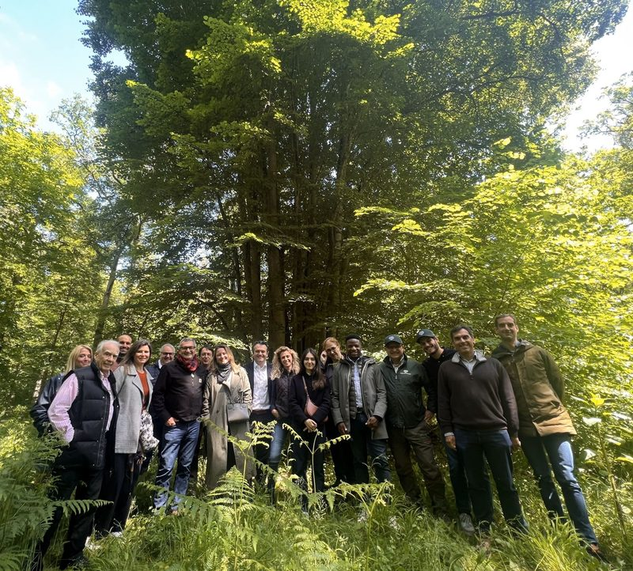
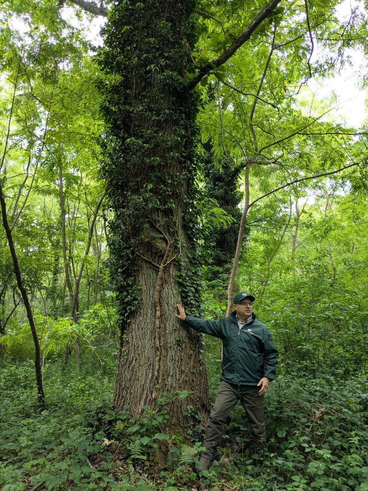
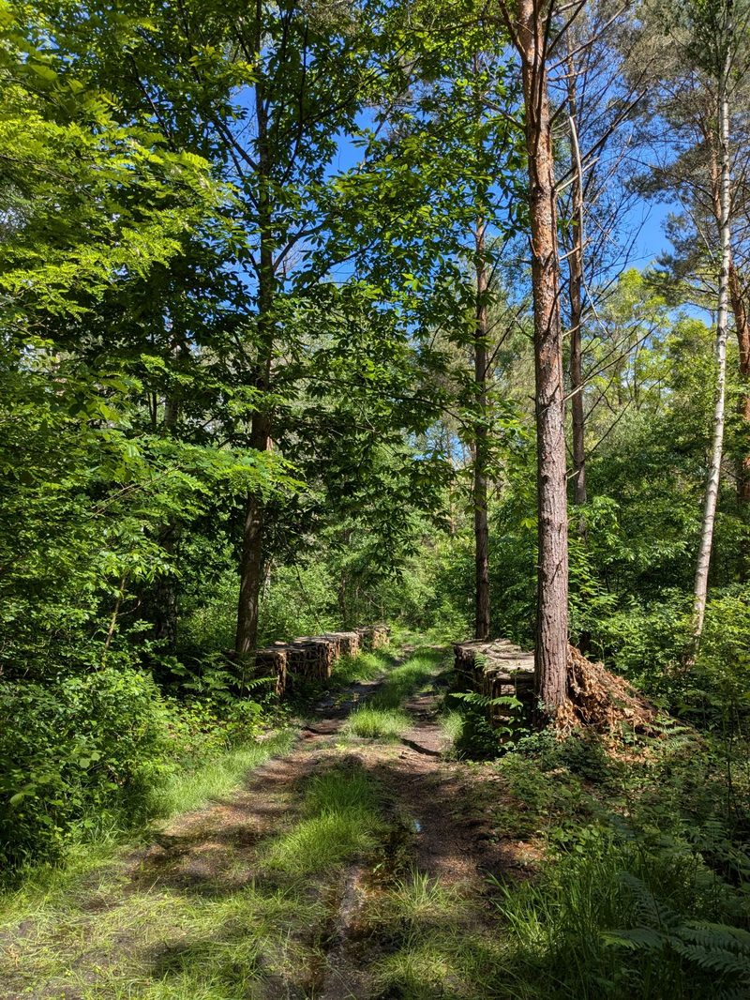

Le Groupement Forestier d'Investissement (GFI) est un placement atypique qui séduit de plus en plus d'investisseurs. Un actif tangible, un engagement écologique et un levier fiscal : la forêt a tout pour plaire.
Pourquoi investir dans un GFI ?
- Un actif tangible qui fait du bien à l'esprit : vous investissez dans un patrimoine réel, visible et pérenne
- Un engagement concret pour la planète : gestion durable des ressources naturelles, captation de carbone, préservation de la biodiversité
- Un véritable levier fiscal : réduction d'impôt sur le revenu (18 % du montant investi), exonération partielle d'IFI, et abattement de 75 % sur les droits de succession
Comment fonctionne un GFI ?
Le GFI mutualise les investissements de nombreux épargnants pour acquérir et gérer des parcelles forestières. La gestion est assurée par des professionnels qui s'occupent de la sélection des forêts, de l'entretien et de la commercialisation du bois.
Les revenus proviennent principalement de la vente de bois, mais aussi de la chasse et d'autres activités liées à la forêt. Le rendement est modéré (1 à 3 % par an) mais régulier, et la valorisation du foncier forestier est historiquement stable.


Le GFI vous intéresse ?
Je vous présente les opportunités forestières adaptées à votre profil et vos objectifs. Premier rendez-vous gratuit.
Prendre rendez-vous